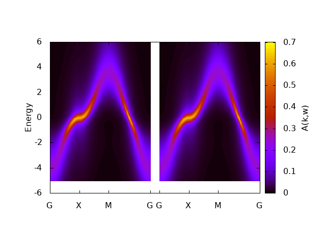

The first example: 2D Hubbard model¶
The first example is the two-dimensional Hubbard model. We use the Hubbard-I approximation for solving the effective impurity problem and see the emergence of the Mott gap. The input file is given below.
[model]
seedname = square
lattice = square
norb = 1
nelec = 1.0
t = -1.0
kanamori = [(2.0, 0.0, 0.0)]
nk = 8
[system]
beta = 40.0
n_iw = 1000
prec_mu = 0.001
[impurity_solver]
name = TRIQS/hubbard-I
[control]
max_step = 5
sigma_mix = 1.0
[tool]
broadening = 0.4
knode = [(G,0.0,0.0,0.0),(X,0.5,0.0,0.0),(M,0.5,0.5,0.0),(G,0.0,0.0,0.0)]
nk_line = 100
omega_max =6.0
omega_min =-5.0
Nomega = 400
Pre-process : dcore_pre¶
We first generate an HDF5 file that is necessary for DMFT calculations.
The script dcore_pre is invoked for this purpose:
$ dcore_pre dmft_square.ini
Then, an HDF5 file named seedname.h5 (square.h5 in the present case) will be generated.
DMFT loop : dcore¶
One can perform a DMFT self-consistent calculation with dcore program.
In this tutorial, we use the Hubbard-I solver just for simplicity.
One can run the program by
$ dcore dmft_square.ini --np 1
with a single process.
It takes several minutes. You may run it with MPI to reduce the computational time.
Results for the self-energy and Green’s function in each iteration are accumulated into an HDF5 file named seedname.out.h5 (square.out.h5 in the present case).
One can check the convergence of DMFT iterations by using dcore_check program as follows.
$ dcore_check dmft_square.ini
dcore_check program prints the value of the chemical potential at each iteration on the standard output:
@ Reading dmft_square.ini ...
Loading Sigma_iw...
Loading dc_imp and dc_energ...
Total number of Iteration: 5
Iter Chemical-potential
1 0.0
2 0.141978800943
3 0.597913733347
4 0.700078346042
5 0.742275654406
Output check/sigma.dat
Output check/sigma_ave.png
Output check/iter_mu.dat
Output check/iter_mu.png
Output check/iter_sigma-ish0.png
Output check/iter_sigma.dat
Done
dcore_check generates several figures as well as data files in text format.
For instance, check/iter_sigma-ish0.png shows how the renormalization factor converges for each orbital.
{kind=link}
Spectral function : dcore_post¶
We can calculate the density of states and the momentum-dependent single-particle excitations using dcore_post program.
In the Hubbard-I solver, the self-energy on the real-frequency axis can be directly computed (no analytical continuation is required).
Hence, the impurity problem is solved once more in dcore_post.
The calculation is done by the following command:
$ dcore_post dmft_square.ini --np 1
After finishing the calculation,
square_akw.dat, square_akw.gp and square_dos.dat are generated.
The data of momentum-resolved spectral functions are output into square_akw.dat.
We can easily plot the result by using the script file square_akw.gp for gnuplot:
$ gnuplot square_akw.gp
In the plot shown below, the left and right panels correspond to up and down spins, respectively.

The result for the density of states is output into square_dos.dat.
We can plot it using gnuplot as follows:
set xlabel "Energy"
set ylabel "DOS"
plot "square_dos.dat" w l
{kind=link}
Another impurity solver: CTHYB-SEG¶
The input file for ALPS/cthyb-seg is given as below.
[model]
seedname = square
lattice = square
norb = 1
nelec = 1.0
t = -1.0
kanamori = [(4.0, 0.0, 0.0)]
nk = 8
[system]
beta = 10.0
n_iw = 1000
prec_mu = 0.001
fix_mu = True
mu = 2
[impurity_solver]
name = ALPS/cthyb-seg
exec_path{str} =/path/to/alps_cthyb
cthyb.TEXT_OUTPUT{int} = 1
cthyb.MEASUREMENT_freq{int} = 1
MEASURE_gw{int} = 1
MAX_TIME{int} = 100
cthyb.N_MEAS{int} = 50
cthyb.THERMALIZATION{int}=1000
cthyb.SWEEPS{int}=100000000
[control]
max_step = 20
sigma_mix = 1.0
time_reversal = True
[tool]
broadening = 0.4
knode = [(G,0.0,0.0,0.0),(X,0.5,0.0,0.0),(M,0.5,0.5,0.0),(G,0.0,0.0,0.0)]
nk_line = 100
omega_max =6.0
omega_min =-5.0
Nomega = 400
The computed momentum-resolved spectral functions are shown below.
{kind=link}